Posted: July 28th, 2009 | Author: Carter Rabasa | Filed under: Wedding | Tags: london, uk | Comments Off
Our last night day in Europe was spent with Macko. We enjoyed an evening in Bank, had some pints, relished an A+ Italian dinner down by the river and then retired to Macko’s enormous flat to watch Layer Cake. A wonderful day and a lovely way to cap off an epic trip abroad.
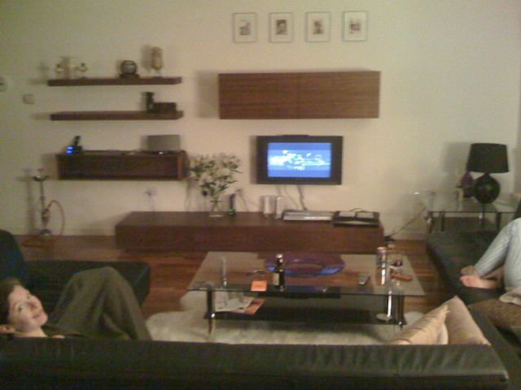
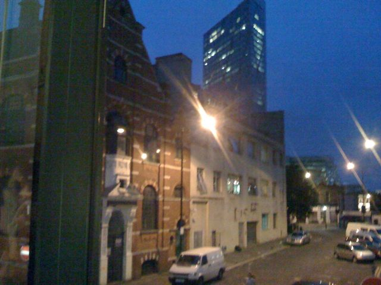
Posted: July 27th, 2009 | Author: Carter Rabasa | Filed under: Wedding | Tags: baby | Comments Off
So, the cat is out of the bag. It seems that we’re coming back to the States with a special kind of Turkish Delight: Carrie is pregnant!
We found out while in Budapest (after some confusion trying to understand the directions for the home test). Doing some math, we figure that Carrie got pregnant while we were in Istanbul.
We are both incredibly excited. It has been such an amazing trip, and to have this happen in such short order is almost too much to handle. Carrie and I will be landing in Austin on Wednesday and can’t wait to see and talk to everyone.
Posted: July 22nd, 2009 | Author: Carrie Knittel | Filed under: Wedding | Tags: france, paris | Comments Off
Mi amor, a baguette and cheese, and some red wine at the Eiffel Tower. Life doesn’t get much better!
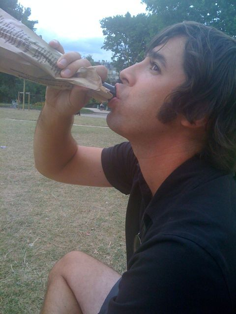
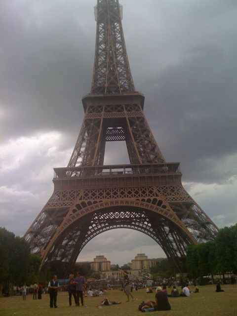
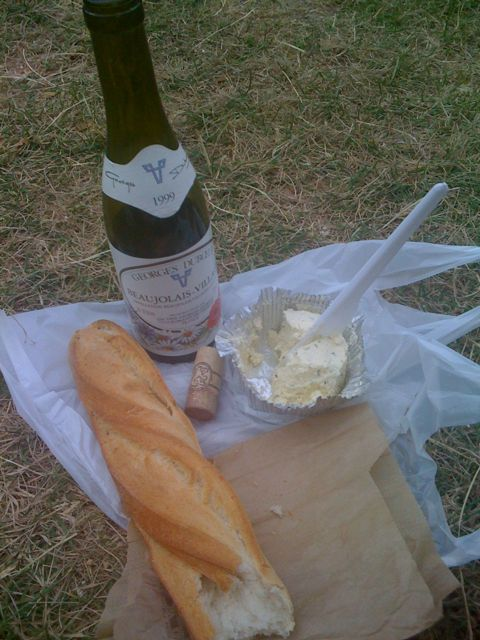
Posted: July 21st, 2009 | Author: Carter Rabasa | Filed under: Wedding | Tags: france, paris | Comments Off
We took the overnight train from Hamburg, and we now have 3 nights in gay Paris before shuttling through the Chunnel to London. On the agenda:
Wine & sandwich picnic at the Eiffel Tower
Pho in Little Vietnam
Early morning sprint around the Louvre
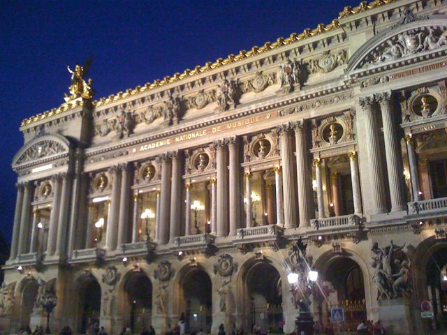
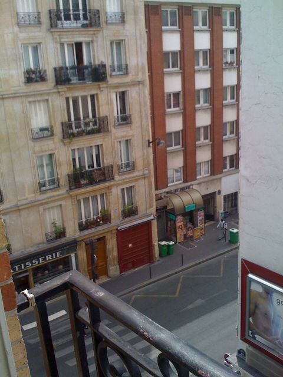
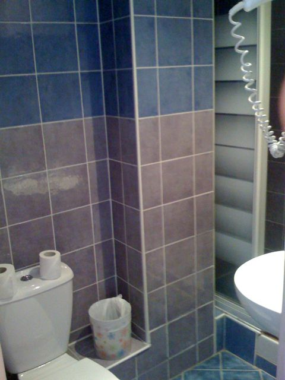
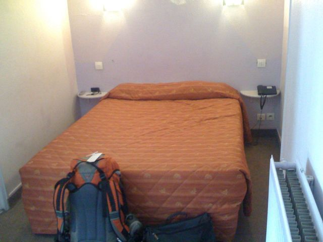
Posted: July 16th, 2009 | Author: Carter Rabasa | Filed under: Wedding | Tags: czech, prague | Comments Off
Views from our room in Prague. We’re staying at the Little Budget Hotel, but there’s nothing budget about our view, our location or our suite. 
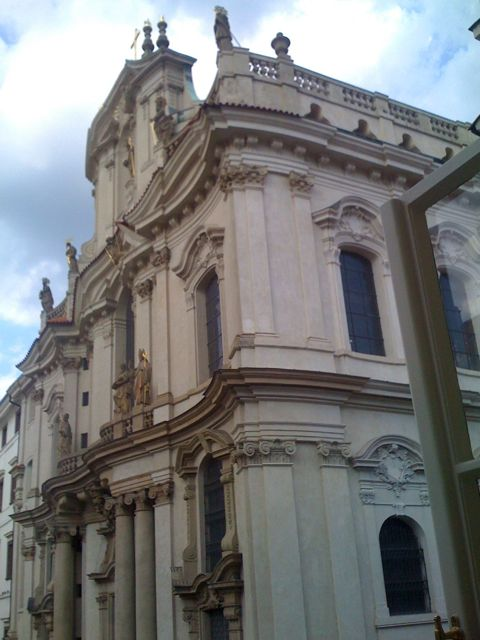
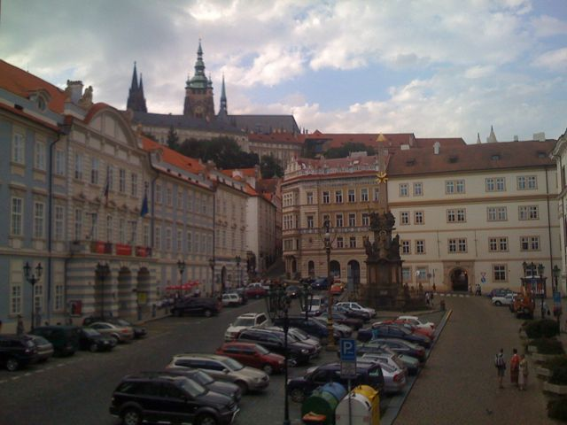
Posted: July 12th, 2009 | Author: Carter Rabasa | Filed under: Wedding | Tags: hungary | Comments Off
I had a strange David Sedaris moment of the train from Zagreb to Budapest. I had gotten restless watching Carrie sleep soundly on across 3 of the seats in our 6-seat compartment. There’s something about a sleeping beauty that keeps even the most hard-up traveler from barging into our quiet little space and disturbing things. I had seen half a dozen people get on the train, walk by, peek in, and continue on their way as I studiously avoided any eye contact.
Anyway, as I was walking around, I noticed the pretty countryside and towns that we were passing. I stuck my head slightly out the window to sink it in. As I craned my neck around, I saw a boy, maybe 8, sitting on a wooden fence waving at the train. His mother and father were behind him and there was a dirt road leading away from the little dead-end that they were standing at. It occurred to me that this boy’s parents had brought him to this spot so that he could wave at the train. Maybe this is a big deal? Maybe he’d never seen a train before?
So I stuck my hand out the window and waved back. The boy didn’t catch this, but his father did. He said something to his son, pointing in my direction as the train raced away and, I swear to god, I think he smiled. As the train receded, I watched the family gather their things and head back down the dirt road.
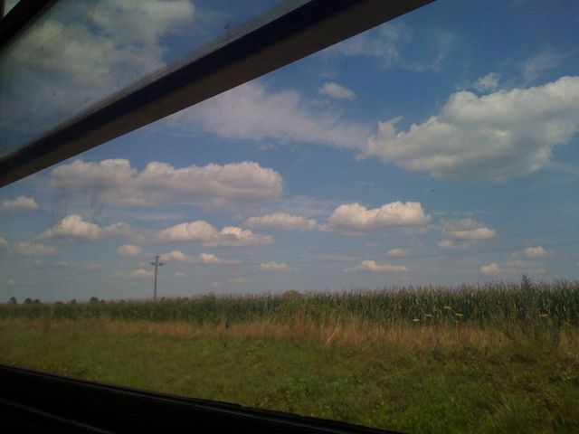
Posted: July 12th, 2009 | Author: Carter Rabasa | Filed under: Wedding | Tags: croatia, zagreb | Comments Off
The Economist publishes a Big Mac index, essentially a compilation of what a Big Mac costs in other countries. If classical economic theory is correct, this should allow people, among other things, to calculate exchange rates. For instance, if a Big Mac costs $3 in the U.S. and 2€ in France, then the exchange rate should be $1.50 to the Euro. This is called Purchase Price Parity.
What the Economist couldn’t have known was that although my cheeseburger meal in Switzerland cost $12, it was the most delicious thing I’ve ever eaten in a McDonald’s. And the Royal with Cheese meal that I just had in Zagreb, while only costing $6, looked and tasted like I had scraped it off the bottom of my foot. So, not all hamburgers are created equal. Something to think about, Economist.
Posted: July 9th, 2009 | Author: Carter Rabasa | Filed under: Wedding | Tags: bosnia, croatia | Comments Off
These are kind of inside jokes, so bear with me:
The bus to Dubrovnik runs every hour… except 9am! Figure it out for yourself, back-packa!
Yaaaaaarrrrgggggghhhhhhh Muuuuurrrraaaaaawwwwww
3 kunas to use the WC at a bus stop. If you consider a hole in the ground a WC.
Carrie is getting rained on by the condensation from the AC unit in our bus. She has ceased to be irritated and is slowly going insane. “I need more paper towels!”
A guy tried to buy a water, candy bar and chips with a fistful of weird change. No dice. He takes away the candy. No dice. He takes away the chips. Confusion still reigns. He says angrily, “I no buy nothing now!”
I happily bought two beers for $4. I need some road beers for this ride.
We just rolled through the border to enter Bosnia. Yeah, no shit. Did you know Croatia’s coastline isn’t contiguous down to Dubrovnik? Neither did I! This bus ride is going from weird to surreal.
Posted: July 9th, 2009 | Author: Carrie Knittel | Filed under: Wedding | Tags: hvar | Comments Off
Don’t let the backpacks fool you. We are really striving for the utmost glamor in our second month of traveling. To get to Hvar from Ljubljana, we grabbed a very early train to Zagreb, took a tram to the main bus station, took a bus to the airport, flew an hour to Split on a Croatia Airlines propeller plane, then hopped on a ferry for the 45-minute ride to Hvar. As I write this, we’re on a 5-hour bus ride to Dubrovnik, and the AC, when the driver turns it on, periodically drips on me. I initially tried to fix it by stuffing the leaking area with a napkin, but that eventually fell down as a soaking glob of pulp. Then I put my McGyver thinking cap on and used a plastic knife to wedge the stained window curtain into a ceiling panel, thus absorbing the drops before they reach my scalp. GLAMOUR.
Hvar is known more for its nightlife than for its beaches, which are really rocky. Our first time out to the beach, I happily roasted away, reading on a pile of pebbles and an ant colony after watching Carter tip toe around jagged rocks and a mess of sea urchins. We were able to find a nicer spot our next time out.
We ate/binged really well in Hvar. Thankfully we’re doing a lot of walking…to gelato stands. We basically subsided on a steady diet of grilled seafood and gelato (pistachio, cookies, strawberry, hazelnut, strachiasomething – we’ll finish off the rest of the flavors in Dubrovnik).
No visit to Hvar would be complete without a night at the famous Euro-fave club, Carpe Diem. We met a couple of Swedish sisters, and bar hopped with them before getting our dance and mojitos on at Carpe Diem.
Here are a few pics I took as our plane approached Split. I think it’s interesting how the iPhone captured the propeller. It looks like a series of photos instead of a blur.
Update: We’re about 100 km from Dubrovnik, and I’m starting to feel like Cate Blanchet’s character in Babel. Well, before she gets shot. But hey, you never know, we’re about to pass through Bosnia. At the last stop, I paid 3 kuna to pee in a hole. Not a bidet. A hole. But we have beer now! And some pretty great views of the Dalmatian coast.
There are some interesting moaning noises coming from the back. Sounds like someone is rehearsing for Leo DeCaprio’s role in What’s Eating Gilbert Grape. A few more gelatos and I could probably play the mother!
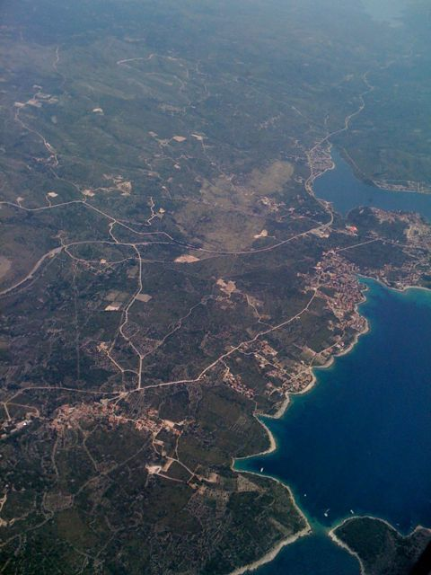

Posted: July 4th, 2009 | Author: Carrie Knittel | Filed under: Wedding | Tags: ljubljana, slovenia | Comments Off
Last night we went out in Ljubljana in an area called Metelkova. It used to be Yugoslavian military barracks, but now the artists have taken it over. There are 7 grungy club/bars (which the city periodically tries to shut down) scattered around a couple courtyards sprayed with graffiti and with some really eccentric sculpture. We grabbed some warm beers and sat in one of the courtyards. I’ve never been anywhere like it, and this is probably the least touristy thing we have experienced so far (with the exception of hanging out with Burak and Emrah in Istanbul). Very cool.
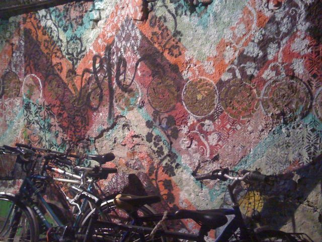
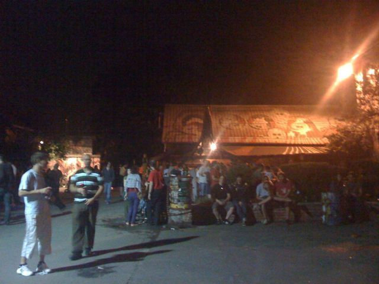
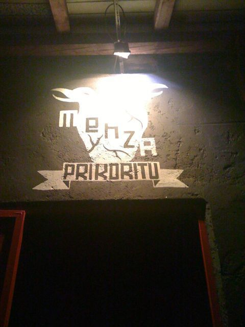
{kind=link}
{kind=link}
{kind=link}
{kind=link}
{kind=link}
{kind=link}
{kind=link}
{kind=link}
{kind=link}
{kind=link}
{kind=link}
{kind=link}
{kind=link}
{kind=link}
{kind=link}
{kind=link}
{kind=link}
{kind=link}
Recent Comments